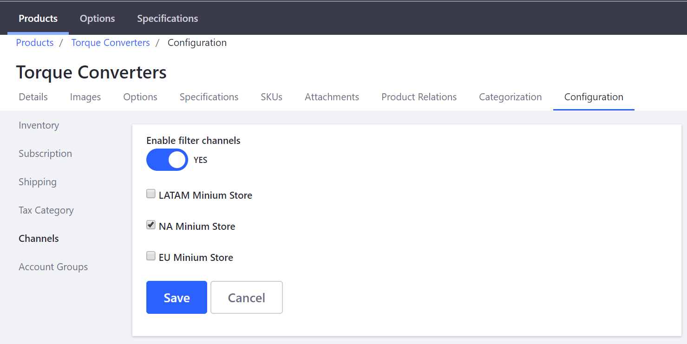

Introduction to Channels¶
Liferay Commerce provides tools designed to meet the needs of complex B2B, multi-region, and multi-market stores and simpler B2C use cases. One way that Commerce enables a wide variety of use cases is through the Channels feature.
In Liferay Commerce, Channels connect Catalogs and Products to any place products are sold: a Liferay Commerce based storefront, third party marketplaces, or even back office phone sales. Using Channels, store administrators are able to manage product availability, sales, and fulfillment by Site and eventually by Country, Region, or Account Group.
In a simple store example, all of a company』s products are managed in one catalog and those products are distributed through a single channel: the company store site.
A simple commerce store example.
In a more complex multi-channel scenario, a company may choose to customize the availability and marketing of certain products in its catalog for each of its various channels.
A more complex use case using multiple Channels.
Liferay Commerce Channels makes managing products, sales, and fulfillment on a single platform simple. See Configuring Product Visibility by Site Using Channels for more information.

Product level configurations to scope product visibility to specific Channels.